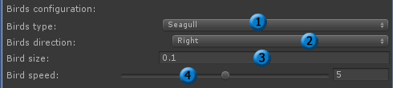
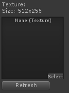
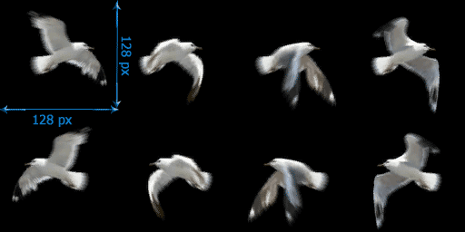
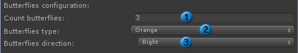
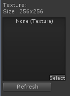
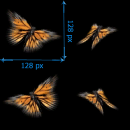
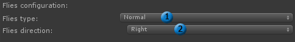
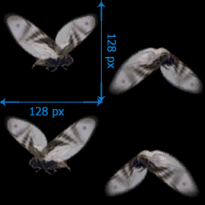

| Documentation v 0.5 |
| Navigation: Table of Content -> Effects configuration -> Creatures Effects |
|
Birds configuration:  1 - Birds type, you choose from 2 types:
 Add texture in this window, Texture format:  And click "Refresh" 2 - Birds direction, you choose from 2 direction:
3 - Bird size. More accurately with this parameter because it is very sensitive. Change this from 0.1 to 1.0. 4 - Bird speed. Change speed from 0 to 10. Butterflies configuration:  1 - Add more butterflies 2 - Butterflies type, you choose from 3 types:
 Add texture in this window, Texture format:  And click "Refresh" 3 - Butterflies direction, you choose from 2 direction:
Flies configuration:  1 - Flies type, you choose from 2 types:
Add texture in this window, Texture format:  And click "Refresh" Back |